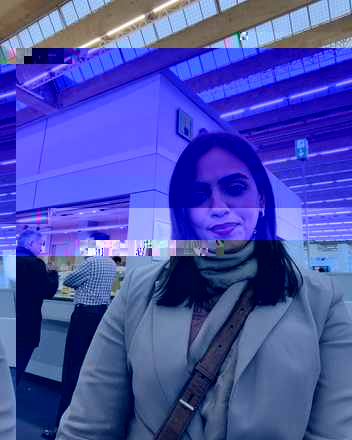

<title>Amna Chinoy</title>
<style>
  @import url('https://fonts.googleapis.com/css2?family=Fraunces:ital,opsz,wght@0,9..144,380;0,9..144,500;0,9..144,600;1,9..144,500;1,9..144,600&family=Public+Sans:wght@400;500;600&family=IBM+Plex+Mono:wght@400;500&display=swap');

  :root{
    --paper:#FAF9F5;
    --ink:#1B1815;
    --ink-soft:#4C453D;
    --muted:#8C8172;
    --accent:#7A2E3B;
    --warm:#B99A7F;
    --line:#E4DFD3;
    --font-display:'Fraunces',ui-serif,Georgia,serif;
    --font-body:'Public Sans',-apple-system,'Segoe UI',sans-serif;
    --font-mono:'IBM Plex Mono',ui-monospace,'SFMono-Regular',monospace;
  }
  @media (prefers-color-scheme: dark){
    :root:not([data-theme="light"]){
      --paper:#16130F;
      --ink:#F1ECE3;
      --ink-soft:#C6BDAE;
      --muted:#8D8272;
      --accent:#E5AAB4;
      --warm:#9C8267;
      --line:#332C22;
    }
  }
  :root[data-theme="dark"]{
    --paper:#16130F;
    --ink:#F1ECE3;
    --ink-soft:#C6BDAE;
    --muted:#8D8272;
    --accent:#E5AAB4;
    --warm:#9C8267;
    --line:#332C22;
  }

  *{box-sizing:border-box;}
  html{scroll-behavior:smooth;}
  body{
    margin:0;
    background:var(--paper);
    color:var(--ink);
    font-family:var(--font-body);
    -webkit-font-smoothing:antialiased;
  }
  @media (prefers-reduced-motion: reduce){
    *{animation-duration:0.01ms !important;}
  }

  a{color:inherit;}

  .rise{opacity:0;transform:translateY(14px);animation:rise .7s cubic-bezier(.2,.7,.3,1) forwards;}
  @keyframes rise{to{opacity:1;transform:translateY(0);}}

  header.site{
    display:flex;
    align-items:center;
    justify-content:space-between;
    padding:26px clamp(20px,5vw,64px);
    border-bottom:1px solid var(--line);
  }
  .legal-strip{
    padding:9px clamp(20px,5vw,64px);
    border-bottom:1px solid var(--line);
    font-family:var(--font-mono);
    font-size:11.5px;
    letter-spacing:.03em;
    color:var(--muted);
  }
  .wordmark{
    font-family:var(--font-mono);
    font-size:13px;
    letter-spacing:.11em;
    text-transform:uppercase;
    color:var(--ink);
    text-decoration:none;
  }
  .wordmark-block{display:flex;flex-direction:column;gap:3px;}
  .wordmark-sub{font-family:var(--font-mono);font-size:9.5px;letter-spacing:.08em;text-transform:uppercase;color:var(--muted);}
  nav.primary{display:flex;gap:28px;align-items:center;}
  nav.primary a, nav.primary span{
    font-family:var(--font-mono);
    font-size:12.5px;
    letter-spacing:.06em;
    text-transform:uppercase;
  }
  nav.primary a{
    text-decoration:none;
    color:var(--ink-soft);
    border-bottom:1px solid transparent;
    padding-bottom:2px;
    transition:color .15s, border-color .15s;
  }
  nav.primary a:hover{color:var(--accent);border-color:var(--accent);}
  nav.primary span.soon{
    color:var(--muted);
    display:inline-flex;
    align-items:center;
    gap:6px;
    cursor:default;
  }
  nav.primary span.soon::after{
    content:"soon";
    font-size:9.5px;
    border:1px solid var(--line);
    border-radius:20px;
    padding:1px 6px;
    color:var(--muted);
  }

  main{max-width:1040px;margin:0 auto;padding:0 clamp(20px,5vw,64px);}

  .hero{padding:clamp(56px,10vw,108px) 0 clamp(40px,7vw,72px);}
  .hero-grid{display:grid;grid-template-columns:1fr auto;gap:clamp(32px,5vw,64px);align-items:center;}
  .hero-photo{
    width:clamp(180px,18vw,240px);
    aspect-ratio:4/5;
    border-radius:3px;
    overflow:hidden;
    justify-self:end;
  }
  .hero-photo img{width:100%;height:100%;object-fit:cover;display:block;}
  @media (max-width:760px){
    .hero-grid{grid-template-columns:1fr;}
    .hero-photo{justify-self:start;width:150px;order:-1;margin-bottom:8px;}
  }
  .eyebrow{
    font-family:var(--font-mono);
    font-size:12.5px;
    letter-spacing:.09em;
    text-transform:uppercase;
    color:var(--accent);
    margin:0 0 22px;
    display:block;
  }
  h1.thesis{
    font-family:var(--font-display);
    font-weight:500;
    font-size:clamp(32px,5.6vw,58px);
    line-height:1.1;
    letter-spacing:-.01em;
    margin:0 0 30px;
    max-width:16ch;
    text-wrap:balance;
  }
  h1.thesis em{
    font-style:italic;
    font-weight:500;
    color:var(--accent);
  }
  .hero-body{
    font-size:clamp(16px,1.7vw,18.5px);
    line-height:1.65;
    color:var(--ink-soft);
    max-width:62ch;
    margin:0 0 34px;
  }
  .registers{
    display:flex;
    flex-wrap:wrap;
    gap:10px 0;
    font-family:var(--font-mono);
    font-size:12px;
    letter-spacing:.05em;
    text-transform:uppercase;
    color:var(--muted);
  }
  .registers span{padding:0 16px;border-right:1px solid var(--line);}
  .registers span:first-child{padding-left:0;}
  .registers span:last-child{border-right:none;}

  section.work{
    border-top:1px solid var(--line);
    padding:clamp(48px,7vw,72px) 0;
  }
  .section-head{
    display:flex;
    justify-content:space-between;
    align-items:baseline;
    margin-bottom:8px;
  }
  .section-label{
    font-family:var(--font-mono);
    font-size:12px;
    letter-spacing:.08em;
    text-transform:uppercase;
    color:var(--muted);
  }
  .section-count{
    font-family:var(--font-mono);
    font-size:12px;
    color:var(--line);
  }

  .work-list{list-style:none;margin:24px 0 0;padding:0;}
  .work-item{
    display:grid;
    grid-template-columns:56px 1fr auto;
    gap:20px;
    align-items:start;
    padding:26px 0;
    border-top:1px solid var(--line);
  }
  .work-item:last-child{border-bottom:1px solid var(--line);}
  .work-index{
    font-family:var(--font-mono);
    font-size:12px;
    color:var(--muted);
    padding-top:4px;
  }
  .work-title{
    font-family:var(--font-display);
    font-size:clamp(20px,2.6vw,26px);
    font-weight:500;
    margin:0 0 8px;
  }
  .work-role{
    font-family:var(--font-mono);
    font-size:11.5px;
    letter-spacing:.04em;
    text-transform:uppercase;
    color:var(--accent);
    margin:0 0 10px;
    display:block;
  }
  .work-desc{
    font-size:15px;
    color:var(--ink-soft);
    max-width:56ch;
    margin:0;
  }
  .work-tag{
    font-family:var(--font-mono);
    font-size:11px;
    color:var(--muted);
    border:1px solid var(--line);
    border-radius:20px;
    padding:4px 12px;
    white-space:nowrap;
    height:fit-content;
    margin-top:4px;
  }

  @media (max-width:640px){
    .work-item{grid-template-columns:32px 1fr;}
    .work-tag{grid-column:2;margin-top:6px;}
  }

  footer.site{
    border-top:1px solid var(--line);
    padding:clamp(36px,6vw,52px) 0 60px;
    display:flex;
    flex-wrap:wrap;
    justify-content:space-between;
    gap:20px;
  }
  .foot-block .foot-label{
    font-family:var(--font-mono);
    font-size:11px;
    letter-spacing:.07em;
    text-transform:uppercase;
    color:var(--muted);
    display:block;
    margin-bottom:8px;
  }
  .foot-block p{
    margin:0;
    font-size:14.5px;
    color:var(--ink-soft);
  }
  .foot-placeholder{
    font-family:var(--font-mono);
    font-size:12.5px;
    color:var(--warm);
    border:1px dashed var(--line);
    padding:8px 12px;
    border-radius:3px;
    display:inline-block;
  }
  .copyright{
    font-family:var(--font-mono);
    font-size:11px;
    color:var(--muted);
  }
</style>

<header class="site">
  <div class="wordmark-block">
    <a class="wordmark" href="#top">Amna Chinoy</a>
    <span class="wordmark-sub">Marvi Uzair</span>
  </div>
  <nav class="primary">
    <a href="#work">Work</a>
    <a href="about.html">About</a>
    <a href="#contact">Contact</a>
  </nav>
</header>

<main>

  <section class="hero" id="top">
    <div class="hero-grid">
      <div class="hero-text">
        <span class="eyebrow rise" style="animation-delay:.02s">Creative Strategist — Brand, Creative &amp; Performance Advertising</span>
        <h1 class="thesis rise" style="animation-delay:.1s">Brand and creative thinking, followed all the way <em>to the sale.</em></h1>
        <p class="hero-body rise" style="animation-delay:.18s">I've built a brand from nothing, directed the creative vision for someone else's, walked into an unfamiliar market as the outside strategist, and stood at a trade-fair booth turning a stranger's glance into a signed order. Different rooms, the same instinct: treat the brand decision, the creative decision and the commercial result as one connected system — not three separate jobs.</p>
        <div class="registers rise" style="animation-delay:.26s">
          <span>D2C</span><span>Luxury</span><span>B2B Export</span>
        </div>
      </div>
      <figure class="hero-photo rise" style="animation-delay:.14s">
        
      </figure>
    </div>
  </section>

  <section class="work" id="work">
    <div class="section-head">
      <span class="section-label">Selected work</span>
      <span class="section-count">05</span>
    </div>
    <ul class="work-list">
      <li class="work-item">
        <span class="work-index">01</span>
        <div>
          <span class="work-role">Founder — 5 years</span>
          <h3 class="work-title"><a href="togs-88.html" style="text-decoration:none;color:inherit;">TOGS-88</a></h3>
          <p class="work-desc">Built and operated a D2C loungewear brand across brand strategy, product, content, e-commerce and customer experience — now also managing its Meta advertising in-house.</p>
        </div>
        <a class="work-tag" href="togs-88.html" style="text-decoration:none;color:var(--accent);border-color:var(--accent);">Read case study →</a>
      </li>
      <li class="work-item">
        <span class="work-index">02</span>
        <div>
          <span class="work-role">Partner &amp; Creative Director — 2 years</span>
          <h3 class="work-title"><a href="kiyam.html" style="text-decoration:none;color:inherit;">KIYAM</a></h3>
          <p class="work-desc">Brand building and creative direction for a luxury prêt label — from visual identity and brand vision through shoots, campaigns, content and creative production.</p>
        </div>
        <a class="work-tag" href="kiyam.html" style="text-decoration:none;color:var(--accent);border-color:var(--accent);">Read case study →</a>
      </li>
      <li class="work-item">
        <span class="work-index">03</span>
        <div>
          <span class="work-role">Creative Strategist — 1.5 years, ongoing</span>
          <h3 class="work-title"><a href="proplex.html" style="text-decoration:none;color:inherit;">Proplex</a></h3>
          <p class="work-desc">Creative and brand strategy across client projects — research, positioning, campaign thinking, creative direction and production.</p>
        </div>
        <a class="work-tag" href="proplex.html" style="text-decoration:none;color:var(--accent);border-color:var(--accent);">Read more →</a>
      </li>
      <li class="work-item">
        <span class="work-index">04</span>
        <div>
          <span class="work-role">Selected project, via Proplex</span>
          <h3 class="work-title"><a href="belgravia-scents.html" style="color:inherit;text-decoration:none;">Belgravia Scents</a></h3>
          <p class="work-desc">USA-market brand strategy and rebrand work — discovery, competitor research, positioning, website direction, social creative and advertising strategy. Project-based, ongoing work.</p>
        </div>
        <a class="work-tag" href="belgravia-scents.html" style="text-decoration:none;color:var(--accent);border-color:var(--accent);">Read case study →</a>
      </li>
      <li class="work-item">
        <span class="work-index">05</span>
        <div>
          <span class="work-role">Commercial &amp; Creative Experience — 2 years, two Heimtextil fairs</span>
          <h3 class="work-title"><a href="home-fusion.html" style="text-decoration:none;color:inherit;">Home Fusion</a></h3>
          <p class="work-desc">Product development and selection, exhibition strategy, stand direction, buyer engagement and commercial conversion for a B2B export textile business.</p>
        </div>
        <a class="work-tag" href="home-fusion.html" style="text-decoration:none;color:var(--accent);border-color:var(--accent);">Read case study →</a>
      </li>
    </ul>
  </section>

  <footer class="site" id="contact">
    <div class="foot-block">
      <span class="foot-label">Get in touch</span>
      <p><a href="mailto:marviuzair28@gmail.com" style="color:inherit;text-decoration:none;border-bottom:1px solid var(--line);">marviuzair28@gmail.com</a><br>+92 334 2117246 &nbsp;·&nbsp; <a href="https://wa.me/923333731424" style="color:inherit;text-decoration:none;border-bottom:1px solid var(--line);">WhatsApp</a></p>
    </div>
    <div class="foot-block">
      <span class="foot-label">Based</span>
      <p>Karachi, Pakistan</p>
    </div>
    <div class="foot-block">
      <span class="copyright">© 2026 Amna Chinoy</span>
    </div>
  </footer>

</main>
